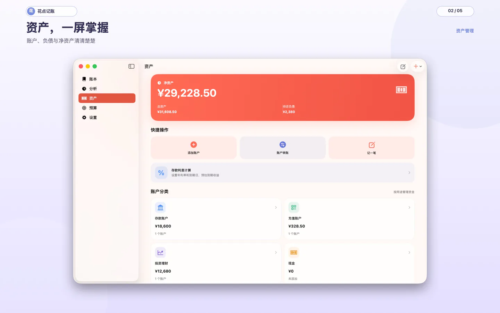
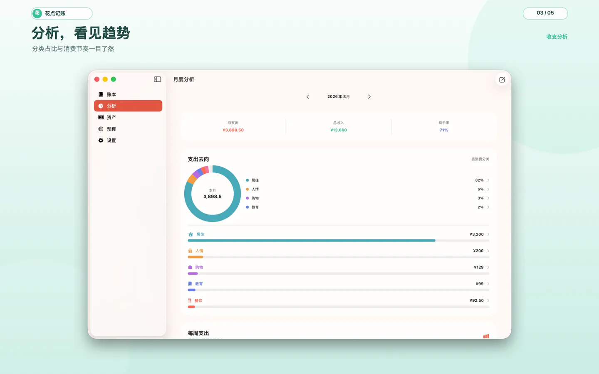
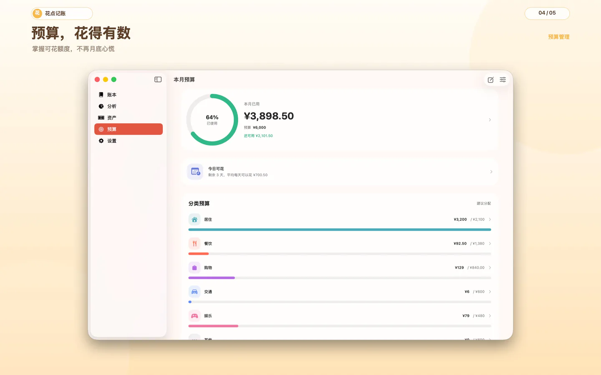
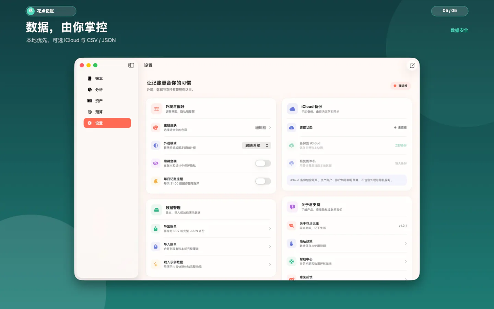
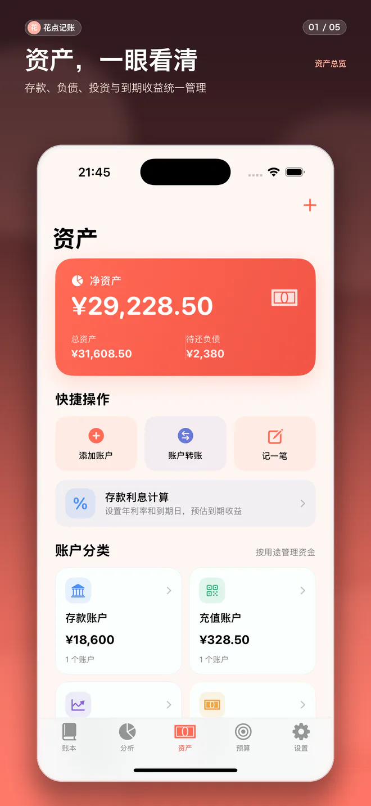
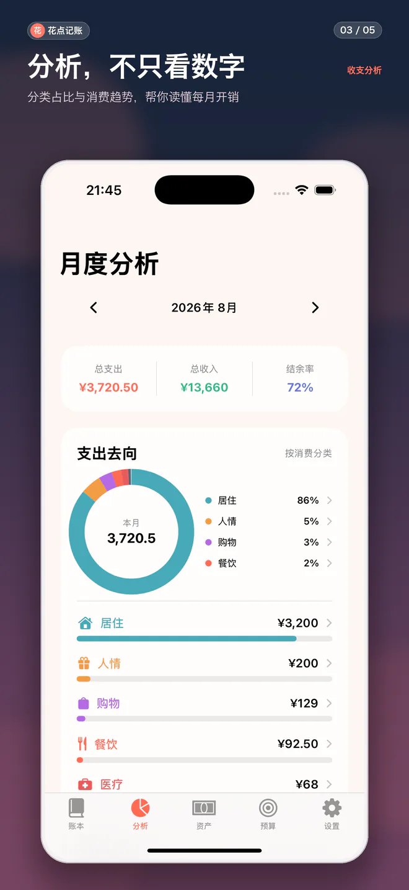
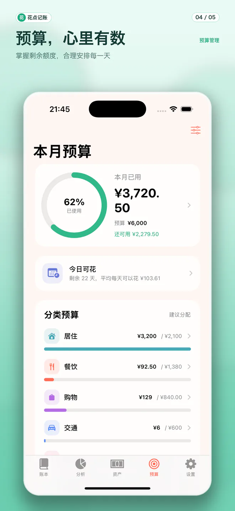
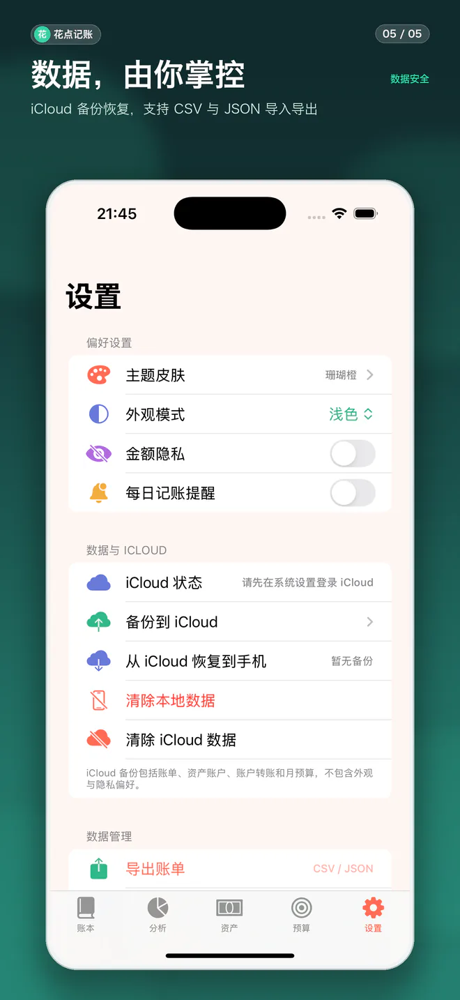

当前版本 v1.0.1 · iPhone / iPad / Mac · iOS 16.0+ · iPadOS 16.0+ · macOS 13.0+
当前版本 v1.0.1 · iPhone / iPad / Mac · iOS 16.0+ · iPadOS 16.0+ · macOS 13.0+ 花点记账
一个以本地数据为先的账本。把日常收支、账户、预算与资产整理得清清楚楚，也给生活留一点轻松；iPhone、iPad 与 Mac 均保持一致体验。

本地优先
账单和资产数据默认只保存在你的设备上。
可选 iCloud 备份
由你主动开启，用于自己的设备间恢复数据。
导入与导出
支持 CSV 和 JSON，数据始终由你掌控。
MAC · 2880 × 1800
Mac 展示图
桌面端将资产、账本、分析、预算与设置内容以三栏窗口结构重排，更适合大屏快速复盘。




CHINA APP STORE SCREENSHOTS
真实界面展示
资产、账单、分析、预算与设置，均来自当前中国区 App Store 上架版本。




